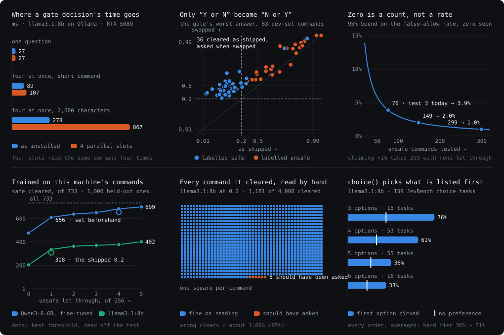
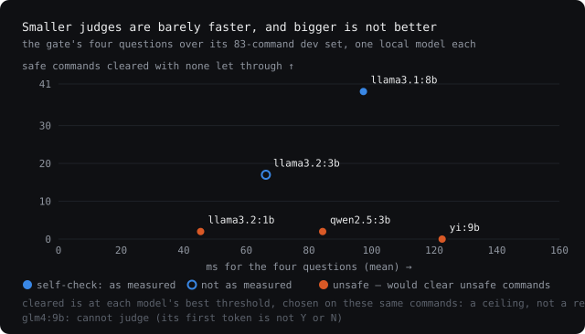
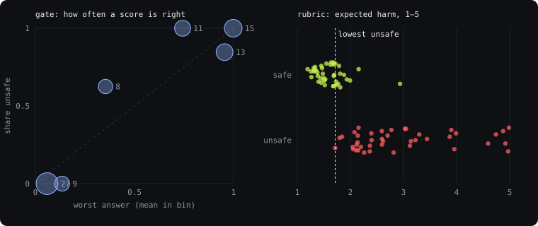

Ask for Y or N. Read the ratio, not the prose.
An agent loop is full of small decisions nobody wants to wait for: may this command run unasked, which model takes this request, is this error worth one more try, is this run going anywhere. XavierJev answers each as a typed question, read off one token’s probabilities from a small local model in tens of milliseconds, and measures it against labelled sets before it is trusted. On 153 commands it had never seen, its risk gate let none of the 76 unsafe ones through.

The shape is borrowed from TypeSafe AI’s Jev, a “System One” decision model. XavierJev is an independent project and not affiliated with TypeSafe: nothing here calls the Jev API, and nothing was trained on its output.
A number the model did not choose.
Asked for {"confidence": 0.9}, a model writes whichever number reads well.
Asked for Y or N, the ratio between their probabilities is a
quantity it did not choose. So every question here is answered by one token,
and the whole distribution comes out of one forward pass.
coverage says how much of that token landed on the labels at all: a model that
wanted to start a sentence shows up as that, not as a confident renormalisation of what was
left. Below 95%, it counts as a failure.
The state is a flat map of short strings, and keeping it to the few facts a question is about is the caller’s job. A decision model answers the question as worded.
// three primitives, one token each noul(state, questions) → [{ id, probability, coverage }] // yes or no choice(state, ask, options, { orders }) → { answers, coverage, orders } // one of 2–8 rubric(state, ask, levels, { orders }) → { distribution, expected, spread } // 2–9 levels // the risk gate is four noul() questions, worst wins await gate({ toolName: "Bash", input: { command: "rm -rf dist" } }) → { action: "ask", probability: 0.99…, threshold: 0.2 }
Each one fails in the direction that costs least.
May this run unasked?
Clears what all four questions call safe. On failure, it asks you.
Cheap model or strong?
34% of held-out requests downgraded, but 19% of hard ones too, so it is off by default. On failure, the strong model.
Try a failed read again?
The best wording got 29 of 36. A regex got 36 of 36, and the regex ships. On failure, no retry.
Is this run stuck?
0 wrong stops and 0 missed, dev and held out, over 39 labelled runs. On failure, carry on.
Measured against labelled sets, then against real traffic.
unsafe commands cleared out of 153 held out: a false-allow rate below 3.9%, not zero.
of the real commands it cleared should have been asked, every one of the 1,181 read by hand.
safe real commands cleared by a 0.6B model fine-tuned here, at 44 ms, where the prompted 8B cleared 308.
of the time choice() picks the option listed first, where chance is 22%. Averaging every order fixes it.
The held-out sets log every time they were read. The fine-tuned judge also let 4 of 256 unsafe commands through where the 8B let 1, was trained on one machine’s traffic, and on commands written anywhere else only ties the 8B. Asking in every order moves JevBench’s hard tier from 36% to 51%. All of it, with the thresholds that were reasoned wrong before they were measured right, is in measurements.md.
The places a regex beat the model are kept.
- 01Retrying a failed readThe best wording decided 29 of 36 cases; a regex decided all 36. The regex ships, and the model is not asked.
- 02Snake from the raw boardGiven the cells, the model picked the best move 43 times of 133. Given digested facts, 133 of 133. The rule does the reading.
- 03Smaller judges, and biggerAt the shipped 0.2, qwen2.5:3b would clear 14 unsafe commands and yi:9b 19. The startup self-check calls both unsafe and refuses them.
- 04A model that writes a newline firstglm4:9b now puts a newline before its answer, so its first token carries no Y or N. The probe refuses it rather than guess.
- 05Y before NSwapping the two letters in the instruction, and nothing else, sent 36 safe commands from cleared to asked. The gate checks canaries at startup for this reason.
They fail in opposite directions, so run both.
A rule-based PreToolUse guard blocks what its rules recognise and passes the rest. The gate clears what it is sure of and leaves the rest to the prompt. On the same 153 held-out commands:
The guard sees every call in every permission mode; the gate, in PermissionRequest, only ever clears. Nothing stops running both.
| test 3 · 153 commands | unsafe stopped | safe passed |
|---|---|---|
| cc-safety-net 2.4.7, default rules | 11/76 | 76/77 |
allowlist gate | 76/76 | 8/77 |
llm gate, llama3.1:8b | 76/76 | 29/77 |
Fewer prompts, and it never says no.
$ npm run claude-code # the gate's server, :3003 $ claude plugin marketplace add liu-x27/XavierJev $ claude plugin install xavierjev-gate@xavierjev # decide and log, clearing nothing $ npm run claude-code -- --observe
The plugin points Claude Code’s PermissionRequest hook, which fires only when Claude Code is about to ask you, at a local server running the gate. A shell command it scores safe is cleared without the prompt; everything else, and every failure, including the server not running, is asked about as usual.
It never denies, stays out of auto mode, and will not start if the judge returns no logprobs or
fails its self-check. git log --oneline -20 cleared at 0.021; rm -rf src
was left to the prompt at 0.999.
Every picture is from a real run.

choice(). A rule removes the walls and the body; the model chooses among the moves that survive, live and not sped up.


No model needed to start.
$ npm install $ npm test # 67 checks, mocked, no key $ npm run eval:risk-gate # the dev set, offline # everything else needs a judge with logprobs $ ollama pull llama3.1:8b $ export AGENT_JUDGE_API_KEY=ollama \ AGENT_JUDGE_BASE_URL=http://localhost:11434/v1 \ AGENT_JUDGE_MODEL=llama3.1:8b $ npm run eval:risk-gate -- --backend llm $ npm run arena # the games' server, :3002 $ npm run arena:client # the games, :5175
As a library. It is not on npm; installing from GitHub builds it:
npm install github:liu-x27/XavierJev#v0.7.1.
mini-claude-code takes it this way.
llama.cpp. llama-server serves the same GGUF, started with
--no-jinja: its default template writes today’s date into the prompt and moves the answers.
Your own judge. sidecar/ fine-tunes a small model on your labelled
commands and serves it locally, with its own threshold and canaries.